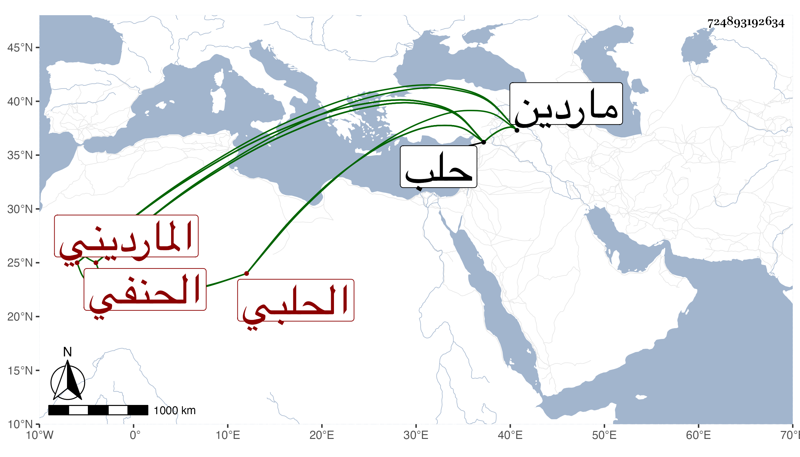

0902Sakhawi.DawLamic.ITO20230111-ara1.EIS1600.724893192634
Biography ID: 724893192634
390
الحسن بن أبي بكر بن محمد بن عثمان بن أحمد بن عمر بن سلامة البدر أبو محمد المارديني ثم الحلبي الحنفي أخو البدر محمد الآتي ويعرف بابن سلامة . ولد سنة سبعين وسبعمائة بماردين وكان أبوه مدرسها فانتقل ولده هذا إلى حلب فقطنها وحج وجاور فسمع هناك علي ابن صديق الصحيح وعلي الجمال بن ظهيرة واشتغل كثيرا علي أخيه بل شاركه في الطلب وحفظ الكنز والمنار وعمدة النسفى والحاجبية وساح ثم أقام وتكسب بالشهادة مع السذاجة وأم في البانية بجامع حلب ونزل له أخوه عند موته عن تدريس الحدادية . وحدث سمع منه الفضلاء . مات بحلب بعد أن انهرم بعد سنة خمسين ظنا .
